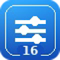
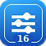

软件包详情
Little16单独开关版
com.little16.rev
Rootlessiphoneos-arm64版本 1.0.4为非全面屏手机带来iPhoneX手势、iPad Dock栏、状态栏以及锁屏快捷按钮，此版本为修改版，仅供交流使用，请勿非法传播用于商业目的


暂无人工维护的更新日志。
作者：oliixwxiilo & michaelmelita1
分类：Tweaks
依赖：mobilesubstrate, preferenceloader
DEB：com.little16.rev-1.0.4-rootless.deb
iOS 版本：未填写 – 未填写
Rootless 实测：unknown
RootHide 实测：unknown
兼容性审计：filename-and-architecture-consistent; jailbreak compatibility not proven
兼容备注：尚未取得独立真机安装验证记录；保持未知，不据 DEB 文件名推断兼容性。
兼容性状态须由真实设备测试记录确认；架构和文件名不构成兼容性证明。